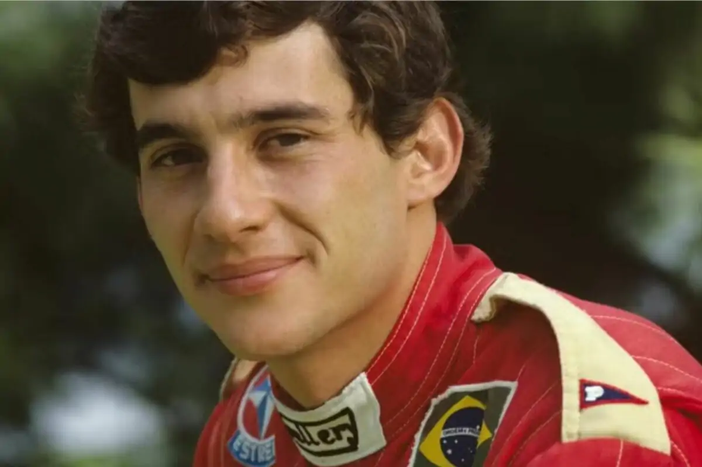
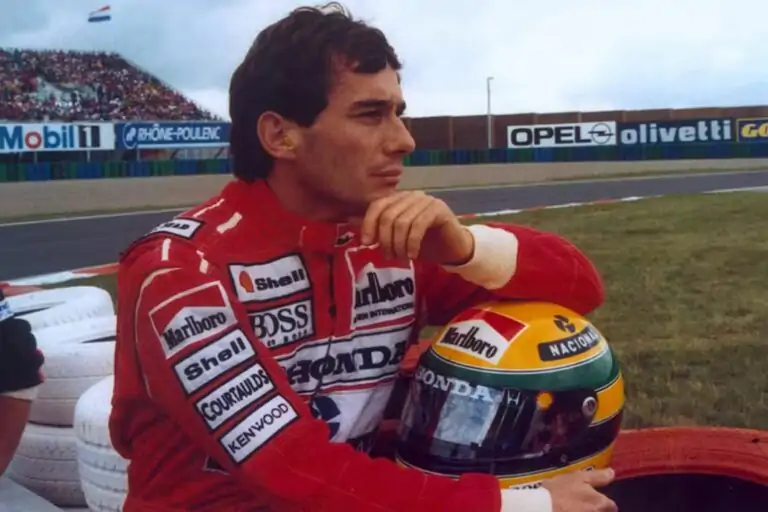
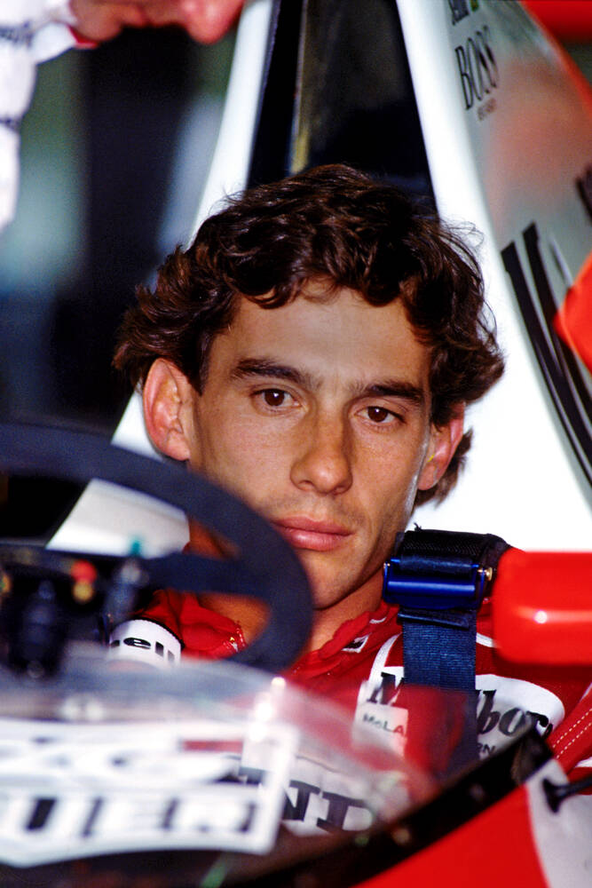
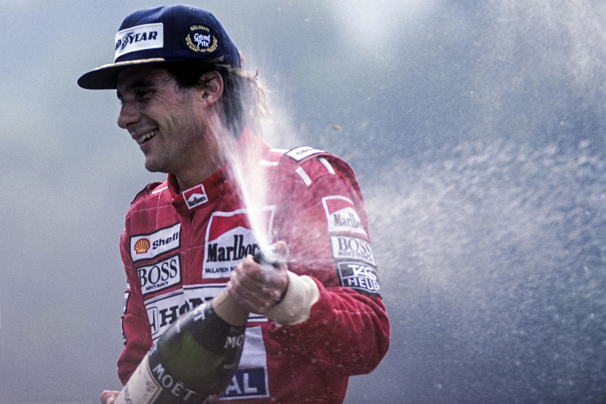
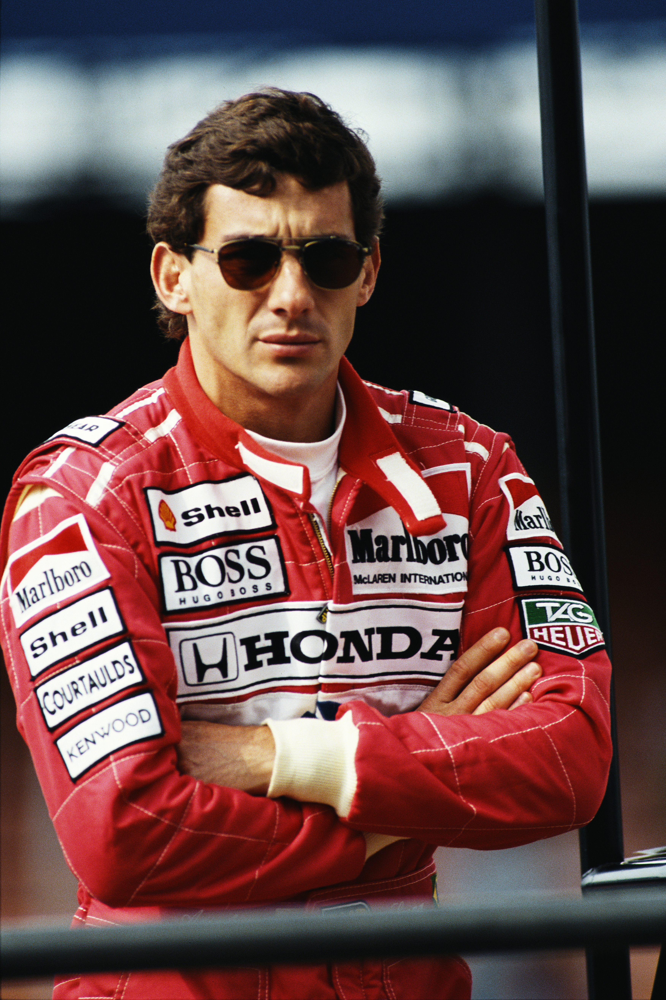
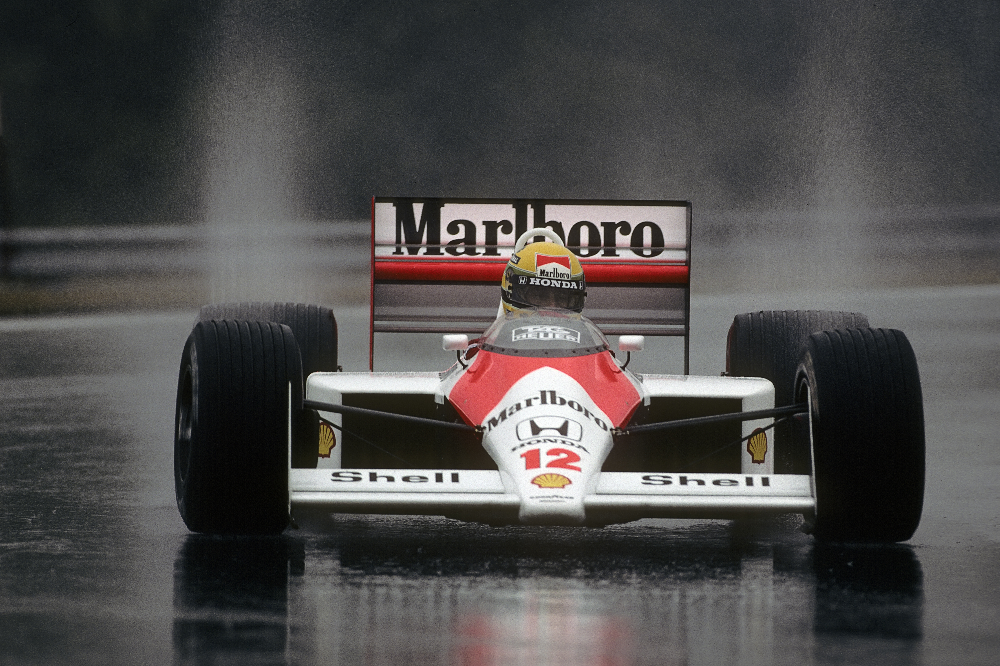
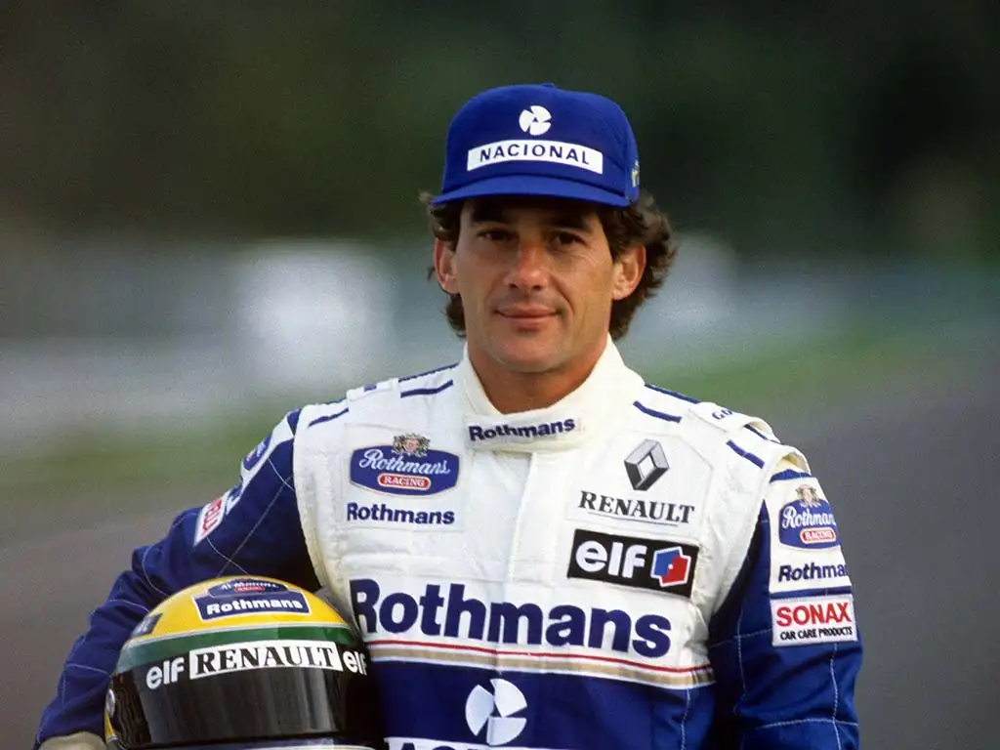
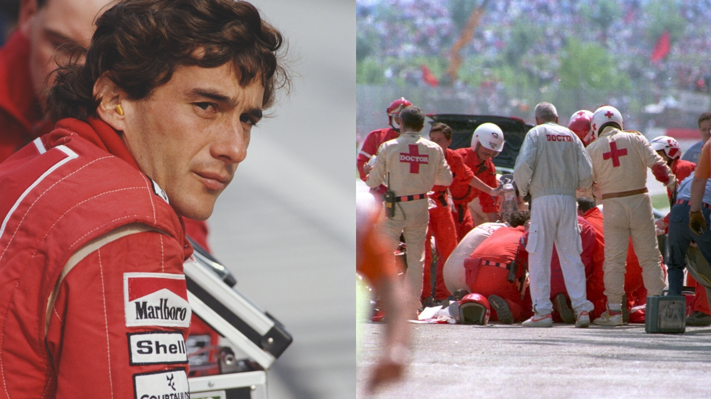

Estreia na Fórmula 1
25 de março de 1984: Estreia na Fórmula 1 pela equipe Toleman no Grande Prêmio do Brasil.
Clique no ano para ver mais ▾Destaca-se no ano com pódios, incluindo o 2º lugar no GP de Mônaco sob chuva.
Ayrton Senna
Linha do tempo da carreira - clique em um ano para ver os detalhes
← Voltar
Estreia na Fórmula 1
25 de março de 1984: Estreia na Fórmula 1 pela equipe Toleman no Grande Prêmio do Brasil.
Clique no ano para ver mais ▾Destaca-se no ano com pódios, incluindo o 2º lugar no GP de Mônaco sob chuva.

Primeiras Vitórias na Lotus
Transfere-se para a Lotus, onde conquista suas primeiras pole positions e pódios.
Clique no ano para ver mais ▾Conquista a primeira vitória na categoria no GP de Portugal de 1985 e vence no GP de Mônaco em 1987.

1º Campeonato Mundial
Assina com a McLaren e conquista o seu 1º Campeonato Mundial de Fórmula 1.
Clique no ano para ver mais ▾Coroando a épica rivalidade com o companheiro de equipe Alain Prost.

2º Campeonato Mundial
Vence o seu 2º Campeonato Mundial de Fórmula 1 pela McLaren.
Clique no ano para ver mais ▾Consolida a sua hegemonia no automobilismo com a conquista do bicampeonato mundial.

3º Campeonato Mundial
Fatura o seu 3º Campeonato Mundial de Fórmula 1 pela McLaren.
Clique no ano para ver mais ▾Consagração do tricampeonato mundial e momentos inesquecíveis na categoria.

Vitórias Memoráveis
Permanece na McLaren acumulando vitórias memoráveis.
Clique no ano para ver mais ▾Conquista o hexacampeonato em Mônaco em 1993 e encerra o ano de 1993 com sua 41ª e última vitória na carreira no GP da Austrália.

Mudança para a Williams
Muda-se para a equipe Williams.
Clique no ano para ver mais ▾Início de uma nova etapa na carreira ao assinar com a equipe Williams.

GP de San Marino
1º de maio de 1994: Sofre fatal acidente durante o Grande Prêmio de San Marino, em Ímola (Itália).
Clique no ano para ver mais ▾O trágico acidente marca o fim de sua trajetória nas pistas e o início do seu legado eterno.